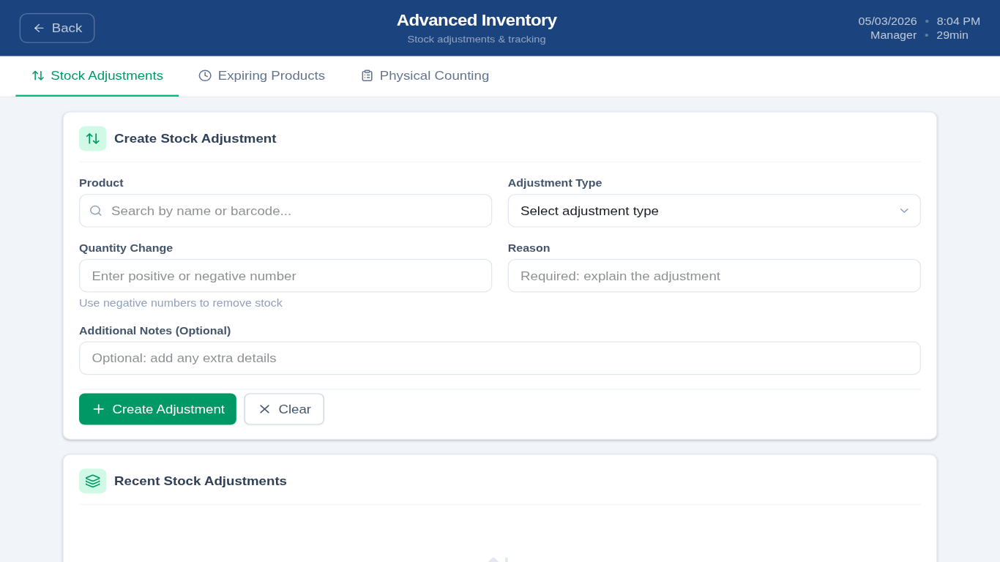
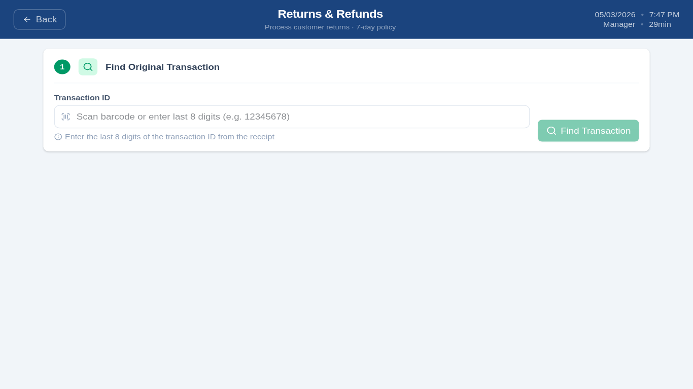
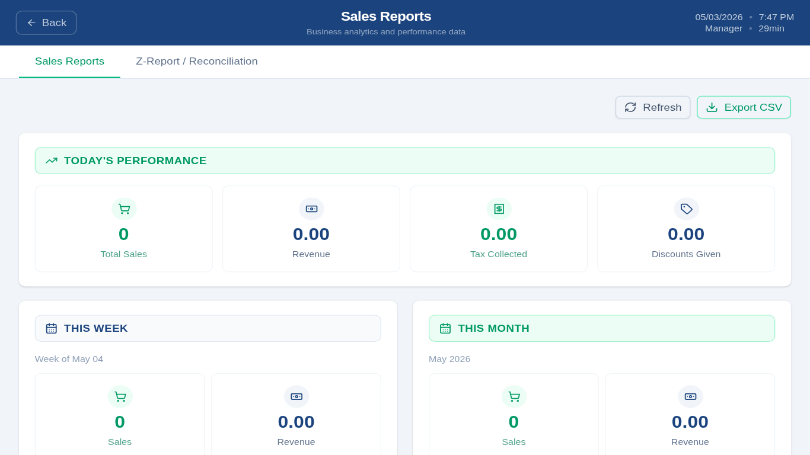
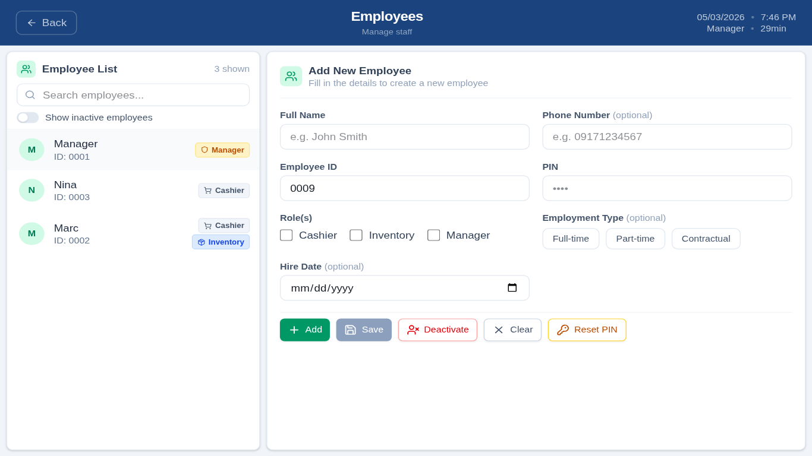
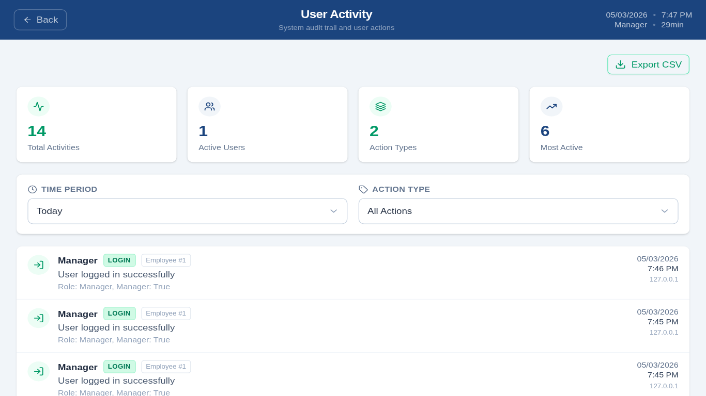
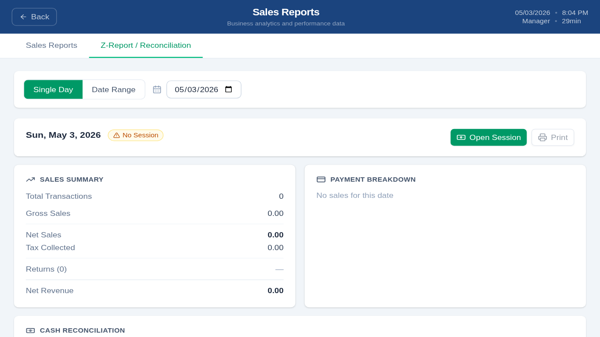
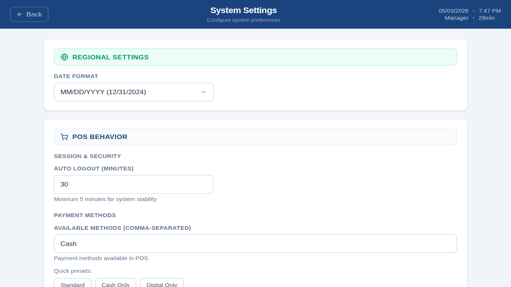
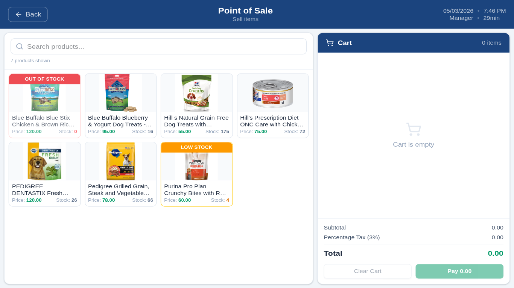
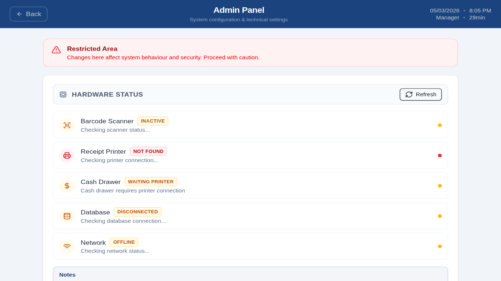

Everything you need
to run a modern store
Built for kiosks and touch screens. Works on Raspberry Pi, Linux, and Windows.

Point of Sale
Multi-item transactions with tax, discounts, and change calculation. Plug in a USB barcode scanner — it's auto-detected and works immediately.

Advanced Inventory
Full product CRUD, batch tracking with lot numbers and expiry dates, manual stock adjustments, physical counting, and low-stock alerts.

Returns & Refunds
Process returns by transaction ID. Optional manager-approval threshold. Automatic stock restoration on approved returns.

Sales Reports
Daily, weekly, and monthly summaries. Top products by revenue and quantity. Payment method breakdown. Z-Report / cash reconciliation.

Employee Management
Manager, Cashier, and Inventory roles with distinct permissions. Add, edit, deactivate, and reset PINs. Full audit trail per user.

Full Audit Trail
Every login, sale, return, and config change recorded with user, timestamp, and IP. BCrypt PINs, JWT denylist, login lockout, and rate limiting.

Cash Reconciliation
Open and close cash sessions with variance tracking. Z-Report per terminal with sales summary, payment breakdown, and cash reconciliation.

System Settings
Date format, auto-logout timer, payment methods, receipt template, and tax configuration — all adjustable without touching code.
Multi-Terminal
Multiple terminals on a shared Supabase database. Each terminal scoped by X-Terminal-Id. Setup wizard for first-run configuration.

Offline Mode
Keep selling when the internet drops. Sales, returns, and stock adjustments queue locally and auto-sync the moment connectivity is restored.

Thermal Receipt Printing
ESC/POS receipts printed directly to USB thermal printers — no CUPS, no drivers on Linux. 80mm paper only. Supports Epson TM, Star TSP, Bixolon, and Citizen.
Hardware Monitor
Live status panel showing printer connection, barcode scanner detection, and database latency. Spot hardware issues before they hit a transaction.